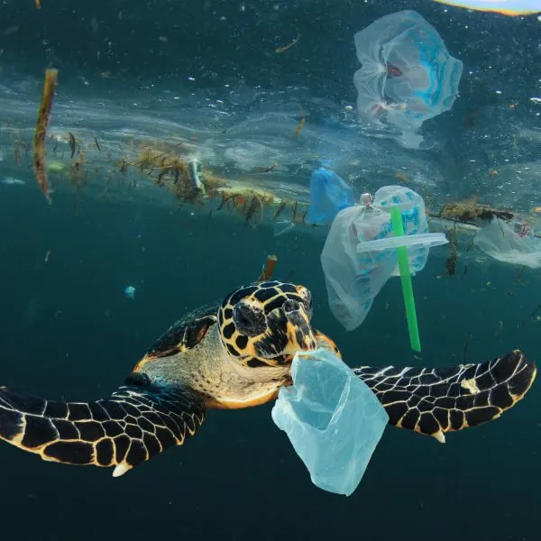
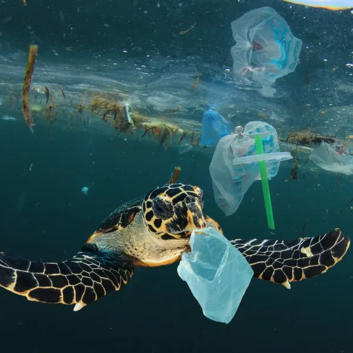

Habitat Destruction
Habitat destruction poses a significant threat to turtles and their survival. Turtles rely on specific habitats for nesting, basking, foraging, and migration. When these habitats are destroyed or altered, it can have severe consequences for turtle populations.
The consequences of habitat destruction for turtles are numerous:
Loss of nesting sites: Turtles often require specific beach areas or terrestrial habitats for nesting. When these areas are destroyed or developed, turtles may be unable to find suitable nesting sites, leading to decreased reproduction and population decline.
Disruption of migration: Many turtle species undertake long-distance migrations between habitats, such as from nesting beaches to feeding grounds. Habitat destruction can interrupt these migration routes, preventing turtles from accessing essential resources and causing population fragmentation.
Food scarcity: Turtles have specific dietary requirements, and their habitats provide a variety of food sources, including aquatic plants, invertebrates, and small vertebrates. Destruction of these habitats can reduce the availability of food, leading to malnutrition and decreased survival rates.
To prevent habitat destruction and mitigate its impact on turtles, several measures can be taken:
Conservation and protection of critical habitats: Identifying and designating important turtle habitats as protected areas is crucial. These areas should be conserved and managed to ensure the long-term survival of turtle populations.
Habitat restoration: Efforts should be made to restore and rehabilitate degraded habitats. This may involve reestablishing vegetation, creating nesting sites, and improving water quality in aquatic habitats.
Land-use planning: Incorporating turtle conservation considerations into land-use planning is essential. Balancing development activities with the protection of turtle habitats can help minimize the negative impacts on their populations.
Main Threats To Turtles


 
